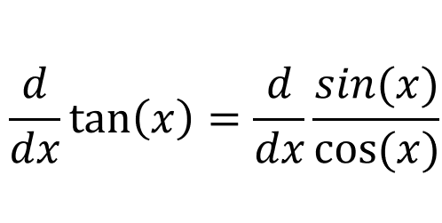
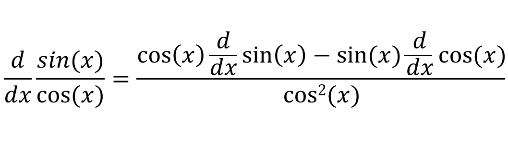
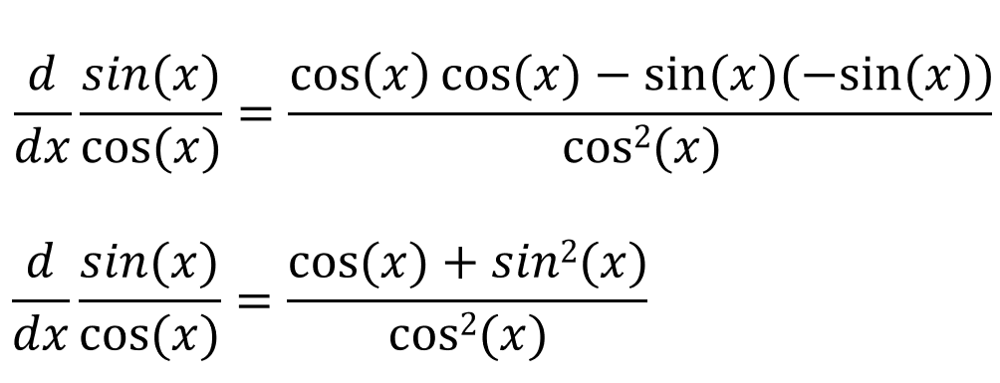
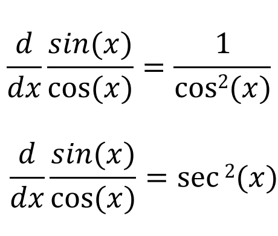
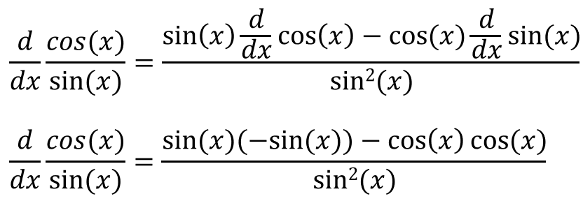
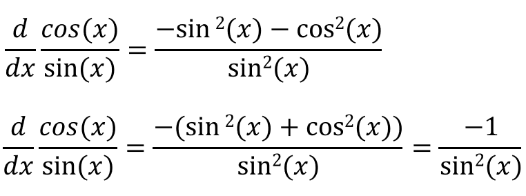
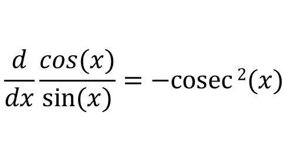

The function tan(x) can be written as sin(x)/cos(x), therefore:
If we use the qoutient rule:
If we simplify this:
If we simplify this further:
So the derivative of tan(x) is sec2(x). Now lets try to find the derivative of cotan(x). Finding the derivative of cotan(x) is the same as finding the derivative of cos(x)/sin(x):
If we simplify the above equation:
This gives our answer as:
